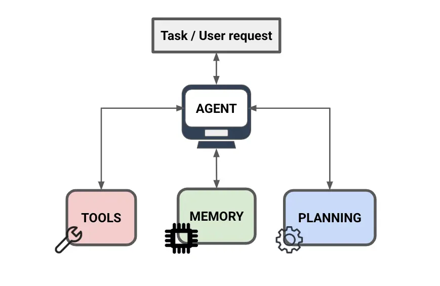

AI Agent 核心コンポーネント
もし AI Agent を一軒のスマートレストラン、それはどのようにあなたのニーズを料理に変えて提供するのでしょうか？これには以下の四大核心コンポーネントが欠かせません：脳、ツール、記憶、プランニング。
- 脳：注文を理解し、目標を判断し、順序を決定する役割を担い、レストランの司令塔です。
- ツール：実際に手を動かす役割を担い、切り分け、調理、仕入れなどの動作を含め、決定を実行可能な操作に変換します。
- 記憶：顧客の好み、現在のステップ、処理済みの内容を記録し、プロセスが混乱せず重複しないようにします。
- プランニング：料理全体をステップに分解し、前後関係を決定し、タスクがプロセスに沿って完了まで進むようにします。

全体アーキテクチャ
下図は AI Agent の五層コンポーネントとその連携関係を示しています。知覚層は外部入力を受け取り、脳は理解と決定を担当し、プランニング層はタスクを分解し、ツール層は実行を担当し、記憶層は全体を通してすべての段階に状態のサポートを提供します。

0、知覚層（Perception）—— レストランのフロント
役割：顧客を対応し、外部世界からのすべての入力を受け取って理解します。
Agent は行動する前に、まず外部情報を「見て」「聞いて」把握する必要があります。現代の Agent は純粋なテキスト入力に限らず、以下のようなマルチモーダル知覚能力を持っています：
- テキスト入力：ユーザーの自然言語による指示、ドキュメントの内容、コード。
- 画像 / 動画：スクリーンショット、デザイン案、図表。Agent は直接「画像を見て」理解できます。
- 構造化データ：表、JSON、データベースのクエリ結果。
- 環境状態：コンピュータ操作型 Agent では、現在の画面状態、Web ページの DOM 構造など。
- ツールの戻り値：前のステップのツール呼び出しの出力は、新しい知覚入力として次のループに入ります。
知覚層の入力は統合され、Agent の「現在のコンテキスト」を形成し、脳に送られて理解と決定が行われます。
1、脳（Brain）—— すなわち大規模言語モデル
役割：レストランの料理長兼マネージャー。
これは Agent の最も核心的な部分です（例：GPT-4、Claude、DeepSeek、通义千问）。
- それは理解するあなたが何を食べたいのかを理解します（意図の理解）。
- それは指示する他の人に作業を指示します（意思決定）。
- それがなければ、レストラン全体が麻痺してしまいます。
脳が行う三つの核心的な仕事
| 能力 | 説明 | レストランでの対応例 |
|---|---|---|
| 意図の理解 | ユーザー入力を解析し、目標が何かを明確にする | 顧客が何を注文したかを理解する |
| 推論と意思決定 | コンテキストと記憶を総合し、次に何をすべきかを判断する | 料理長がどの料理を先に処理するかを決める |
| ツール呼び出しの判断 | 外部ツールを呼び出す必要があるかを判断し、どのツールを選び、どのパラメータを渡すかを決める | どの鍋を使うか、誰に食材を買いに行かせるかを決める |
2、ツール（Tools）—— 厨房の設備
役割：調理器具と助っ人。
料理長（脳）だけでは不十分で、鍋や皿などの調理器具があってはじめて料理ができます。AI Agent にとって、ツールとは決定を実際の動作に変換できる実行ユニットです。
ツールは用途に応じて次の4つのカテゴリに分類できます：
| カテゴリ | 一般的なツール | 役割 |
|---|---|---|
| 情報取得 | オンライン検索、Web スクレイピング、ドキュメント読み取り、データベースクエリ | Agent 自身の知識以外のリアルタイムまたは専門的な情報を取得する |
| 計算実行 | コードインタプリタ、数式計算エンジン、サンドボックス環境 | 正確な計算やプログラムのロジックを必要とするタスクを処理する |
| コンテンツ生成 | 画像生成、音声合成、ドキュメントエクスポート | テキスト以外の形式のコンテンツを生成する |
| システム連携 | API、メール、カレンダー、ファイル操作、メッセージ送信 | 外部システム、サービス、現実世界と連携する |
一般的なツールの例：
- オンライン検索 情報取得（市場に行って新鮮な食材を買うようなもの）
- コードインタプリタ 計算実行（複雑な計算を処理する精密なオーブンのようなもの）
- 作図ツール コンテンツ生成（盛り付けを担当して見た目を美しくする料理人のようなもの）
- API システム連携（外部世界をつなぐ配達員のようなもの）
3、記憶（Memory）—— 顧客の記録ノート
役割：ウェイターの記憶力。
レストランに行くたびに毎回「パクチーは食べません！」と言い直すのは嫌ですよね。
Agent の記憶は以下のいくつかのタイプに分けられます：
- 短期記憶（In-Context Memory）：つまり現在の対話のコンテキストウィンドウです。あなたがさっき言った内容を覚えています（例えば、魚を注文した直後に「辛さ控えめで」と言えば、それが魚のことを指すと理解します）。モデルのコンテキスト長に制限され、通常 8K から 200K token の間です。
- 長期記憶（External Memory）：あなたの長期的な好み（例：ベジタリアンである、自宅の住所など）を覚えています。通常はベクトルデータベース（例：Pinecone、Milvus、Chroma）によって永続化ストレージを実現します。
- エピソード記憶（Episodic Memory）：過去のタスク実行プロセスの記録であり、「前回この状況に遭遇したときどう対処したか」を含み、Agent が過去の経験から学習するのを助けます。
- 意味記憶（Semantic Memory）：抽象的な知識と事実であり、通常は事前学習段階で内化された内容に由来しますが、RAG（検索拡張生成）によって動的に補完することもできます。
RAG：Agent に「外部知識ベース」を持たせる
検索拡張生成（Retrieval-Augmented Generation、RAG）これは現在最も主流の長期記憶実装ソリューションです。その核心的なプロセスは以下の通りです：
4、プランニング（Planning）—— 調理工程表
役割：厨房の提供 SOP。
佛跳墙を注文すると、料理長は適当に作るのではなく、頭の中にリストを生成します：
- まず食材を準備します（アワビ、ナマコ…）
- 次にスープを煮出します
- 最後に弱火でじっくり煮込みます
Agent も同じです。複雑なタスク（例：「競合分析レポートを作成する」）を与えると、自分で分解します：
- ステップ1：競合製品 A、B、C の資料を収集する。
- ステップ2：それらの価格と機能を比較する。
- ステップ3：比較結果を文章にまとめる。
- ステップ4：誤字がないか確認する。
主流のプランニング戦略
計画戦略は、Agentがどのように「思考」してから「行動」するかを決定し、戦略によって推論の深さと適用シーンが異なります：
| 戦略 | 正式名称 | 中核となる考え方 | 適用シーン |
|---|---|---|---|
| CoT | Chain-of-Thought | 回答を出す前に、推論の過程を段階的に書き出す | 数学的推論、論理分析 |
| ReAct | Reasoning + Acting | 「推論」と「行動」を交互に行い、各行動後に結果に基づいて再度推論する | ツール呼び出しが必要な動的タスク |
| ToT | Tree-of-Thoughts | 複数の推論分岐を同時に探索し、その中から最適な経路を選択する | 複雑な意思決定、クリエイティブなタスク |
| Reflection | 自己反省 | タスク完了後、Agentが自身の出力を批判的に検討し修正する | コード生成、長文ライティング |
5、Agent 実行ループ（Agent Loop）
上記の各コンポーネントは独立して存在するわけではなく、継続的に反復する知覚—思考—行動—観察クローズドループを形成しており、これが「Agent Loop」です。Agentはタスクが完了するか終了条件に達するまで、このループを繰り返します。
このループにより、Agentは失敗時に自己修正する能力を獲得します。もしあるステップでツール呼び出しがエラーや予期しない結果を返した場合、「観察」段階でこの情報が脳にフィードバックされ、脳は次の「思考」の際に戦略を調整します。
まとめ
Agentにこう伝えたとします：明日の北京の天気を調べて、もし雨だったら、リマインダーを書いて王さんに送ってください。
Agentの内部では次のように動作します：
- 知覚層：自然言語の指示を受け取り、重要なエンティティ「北京」「明日」「王さん」を識別します。
- 脳：指示を聞いて、2つの条件付きタスクを分析します：天気を調べる、雨ならリマインダーを送信する。
- 計画：まず天気を調べる → 雨かどうかを判断 → （雨なら）リマインダーを書く → 送信する。
- ツール：「天気検索ツール」を呼び出し、結果——明日は雨——を取得します。
- 記憶：アドレス帳（記憶ライブラリ）で「王さん」の連絡先を検索します。
- ツール：「メッセージ送信ツール」を呼び出し、リマインダーを送信します。
- 観察：メッセージの送信成功を確認し、タスク完了、ループ終了です。
実行プロセスの概要図：

五大コンポーネント一覧
| コンポーネント | レストランでの例え | 主な役割 | 主要技術 |
|---|---|---|---|
| 知覚層 | フロント係 | マルチモーダル入力を受信し、コンテキストを構築する | マルチモーダルモデル、OCR、ASR |
| 脳 | 料理長兼マネージャー | 意図の理解、推論・意思決定、指令の呼び出し | LLM、Function Calling |
| 計画 | 配膳SOP | タスク分解、手順の順序付け、自己反省 | ReAct、CoT、ToT、Reflection |
| ツール | 調理器具と助手 | 具体的な操作を実行し、外部世界と接続する | 検索/コード/API/ファイルシステム |
| 記憶 | 顧客記録帳 | コンテキストの管理、長期知識の保存 | ベクトルデータベース、RAG、コンテキストウィンドウ |